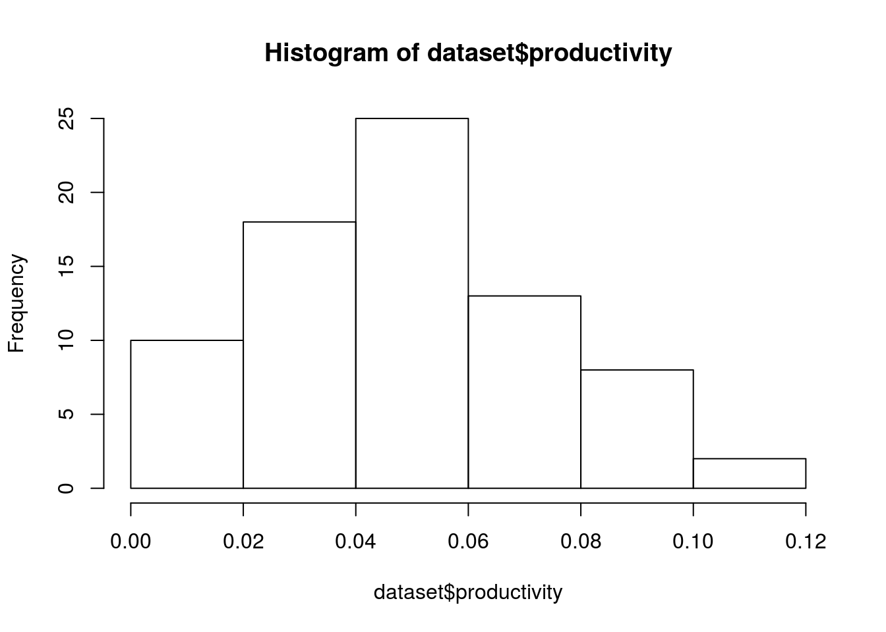
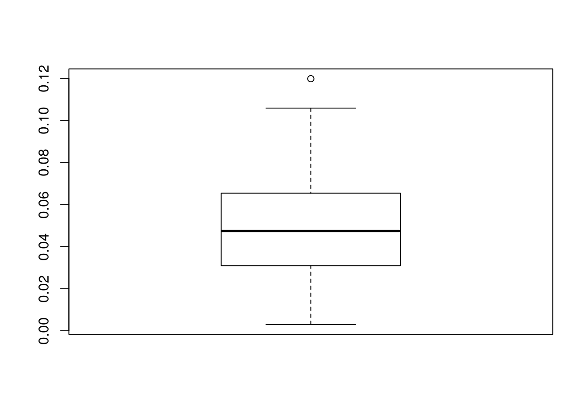
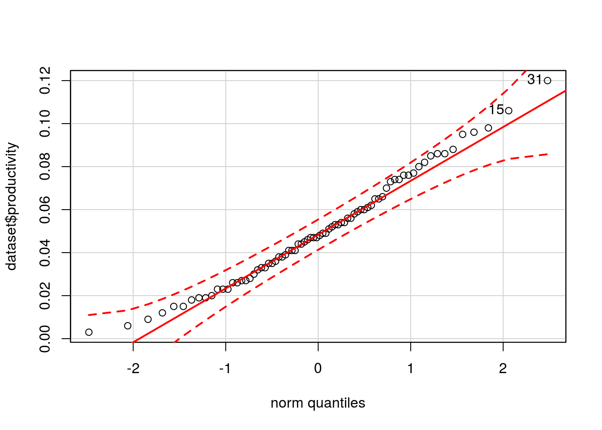
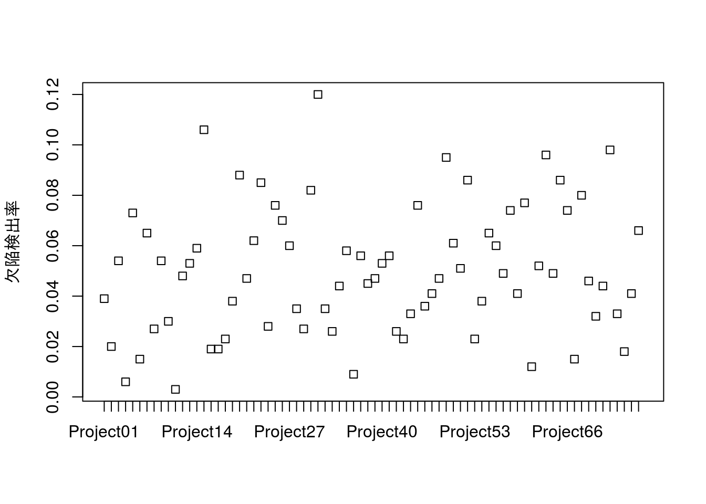

第1章 例題解答例
はじめに
本資料は『ソフトウェアメトリクス統計分析入門』(以降、テキストと記載)の第1章の例題をRで解いた際の解答例を示したものです。また、R Markdownを使うメリットを示すための一手段として作成していますので、テキストにおける計算方法とは異なる部分もあります。本資料で使用しているデータの入手に関してはテキストにてご確認下さい。
本資料がHTML形式の場合、Rのコードを参照するには右側にある[Code]ボタンをクリックして下さい。なお、JavaScriptは必ずOnにしてご覧下さい。
例題1.1
生産性の測定を開始し、あるプロジェクトの生産性が0.09FP/人時となりました。まだデータをとり始めたばかりなので、この0.09という値の良否が判断できません。 そこで、『ソフトウェア開発データ白書』をベンチマークとして、業界内において、どの程度の位置づけとなるのかを調べることにしました。
『ソフトウェア開発データ白書2012-2013』のp.288に業種別FP生産性データが掲載されています。それを図1.1に示します。この組織の業種は、「K. 金融・保険業」に該当します。さて、このプロジェクトの生産性をどのように評価すればよいでしょうか。
出典：ソフトウェアメトリクス統計分析入門 P12
データの設定
本例題で利用するデータの数は多くないので、直接、Rのコードで変数として設定します。
x.prod <- 0.090 # 評価対象となる生産性(productivity)
x.mean <- 0.051 # 同業種での生産性の平均値
x.sd <- 0.029 # 同業種での生産性の標準偏差(不偏標準偏差)評価対象となる生産性：\(0.09\)
同業種での生産性の平均値：\(0.051\)
同業種での生産性の標準偏差：\(0.029\)
Zスコアの計算
テキストではZスコアを計算してから標準正規分布を用いて上位確率を計算していますが、本資料では平均値\(0.051\)、標準偏差\(0.029\)の正規分布から直接上位確率を求めています。
# Zスコアを計算しないでも確率は計算できる(上位からの確率)
prob <- pnorm(x.prod, mean = x.mean, sd = x.sd, lower.tail = FALSE)
# 偏差値(standard score)を出す場合は平均値50、標準偏差10の正規分布の確率から
# 逆算すればよい
ss <- qnorm(prob, mean = 50, sd = 10, lower.tail = FALSE)計算の結果、対象プロジェクトは上位\(9\%\)に位置し、その偏差値は\(63\)となることがわかります。
例題1.2
以下に、ある組織でプロジェクトごとに測定された最終システムテストの欠陥検出率のデータが76 個あります。
欠陥検出率が高いほど製品の信頼性が低く、良くないプロジェクトと考えます。 これらのデータを活用して欠陥検出率上限の基準値を設定し、それを超える場合はプロジェクト終了後に次期プロジェクトに向けて何らかの改善施策を実施してもらう などの管理をしたいと考えています。 管理レベルとして、全体の10％ぐらいが改善対象になるように基準値を設定してください。 出典：ソフトウェアメトリクス統計分析入門 P22
本例題で利用するデータは、予めCSVファイルとして保存されているものとします。
データ名は日本語のままでも構いませんが、RStudioでコーディングする場合は、色々と不都合なので、読み込んだ後で変更しておきます。
データ分布の確認
例題1.1では、対象となるデータが正規分布にしたがっているものと仮定していましたが、本例題では、最初にデータが正規分布に従っていることを確認します。
テキストではヒストグラムのみを確認して、詳細は補足1.3に記載されていますが、ここではヒストグラム、箱ひげ図、QQプロット、シャピロ・ウィルクの正規性の検定の四つの手段で確認を行います。
ヒストグラム
hist(dataset$productivity)
若干、左に偏っている(右に歪んだ)形をしていますが、概ね正規分布と言っても差し障りない分布のように見えます。
箱ひげ図
boxplot(dataset$productivity)
外れ値が一つ示されていますが、中央値も上下ヒンジのほぼ中央にあり、こちらからも正規分布と言っても差し障りのない分布のように見えます。
QQプロット
# 分布の正規性を確認
car::qqPlot(dataset$productivity, dist = "norm", id.method = "y", id.n = 2,
labels = rownames(dataset))
## 31 15
## 76 75データは全て点線の内側に収まっており、正規分布と見えます。
正規性の検定
shapiro.test(dataset$productivity)##
## Shapiro-Wilk normality test
##
## data: dataset$productivity
## W = 0.98179, p-value = 0.3463検定の結果、\(p = 0.3463\)となり帰無仮説が棄却されませんでしたので、正規分布にしたがっていないとは言えません。
外れ値の確認
データ分布の確認において、対象のデータ分布は正規分布とみなせるという結論になりましたが、\(0.12\)というデータが外れ値で ある可能性があります。念の為にドットチャートを使って確認します。
# ドットチャートによるデータの確認
stripchart(productivity ~ pj.no, vertical = TRUE, method = "stack",
ylab = "欠陥検出率", data = dataset) ドットチャートをみると\(0.12\)という値は突出しているようにも見えますが、近くの\(0.106\)と比べると 然程、突出しているようにも思えません。そこで、
- \(0.12\)を外れ値としない
- \(0.12\)を外れ値とする
という2つのパターンで算出し、その結果を比較してみることにします。
平均値と標準偏差の算出
では、上記の2パターンで平均値と標準偏差を算出してみます。
外れ値としない場合
# 平均値と標準偏差
dataset.mean <- mean(dataset$productivity)
dataset.sd <- sd(dataset$productivity)当該データを外れ値とみなさない場合の平均値\((mean)\)と標準偏差\((sd)\)は以下の通り
\[\mbox{平均値} = 0.0501\] \[\mbox{標準偏差} = 0.0254\]
外れ値とした場合
# 外れ値の行数を得る
row.num <- which(dataset$productivity >=
min(boxplot.stats(dataset$productivity)$out))
# 平均値と標準偏差(外れ値を外した場合)
dataset.mean.removed <- mean(dataset$productivity[-row.num])
dataset.sd.removed <- sd(dataset$productivity[-row.num])当該データを外れ値とみなした場合の平均値\((mean)\)と標準偏差\((sd)\)は以下の通り
\[\mbox{平均値} = 0.0491\] \[\mbox{標準偏差} = 0.0242\]
両者の差の確認
# 外さない場合と外した場合の差(平均値と標準偏差)
diff.mean <- dataset.mean - dataset.mean.removed
diff.sd <- dataset.sd - dataset.sd.removed
per.mean <- (dataset.mean - dataset.mean.removed) / dataset.mean * 100
per.sd <- (dataset.sd - dataset.sd.removed) / dataset.sd * 100平均値の差は\(9\times 10^{-4}\)、標準偏差の差は\(0.0012\)と共に約0.001ですが、率\([\%]\)で見ると\(1.9\%\)と\(4.6\%\)なため基準値も2パターンで出してみます。
基準値の算出
テキストではZスコアを計算してから標準正規分布を用いて計算していますが、本資料では例題1.1でやったように各々の正規分布から直接基準値を算出します。
# 基準値の算出
std.value <- qnorm(0.1, mean = dataset.mean, sd = dataset.sd,
lower.tail = FALSE)
std.value.removed <- qnorm(0.1, mean = dataset.mean.removed,
sd = dataset.sd.removed,
lower.tail = FALSE)外れ値としない場合の基準値は\[0.083\] 外れ値とした場合の基準値は、\[0.08\]
となります。念のためにこの基準値を用いた場合、基準値外となる要改善数を確認します。
基準値の確認
# 条件を満たすデータの数を数える
num <- sum(dataset$productivity > std.value)
num.removed <- sum(dataset$productivity > std.value.removed)
# 比率を算出する
per.num <- round(num / length(dataset$productivity) * 100)
per.num.removed <- round(num.removed / length(dataset$productivity) * 100)外れ値としない場合の要改善数は\[9(12\%)\] 外れ値とした場合の要改善数は\[10(13\%)\] となり、当初目標であった\(\underline{10\%\mbox{程度}}\)を概ね満たしていると言える。
 CC BY-NC-SA 4.0, Sampo Suzuki [2017-04-22 14:22(JST)]
CC BY-NC-SA 4.0, Sampo Suzuki [2017-04-22 14:22(JST)]